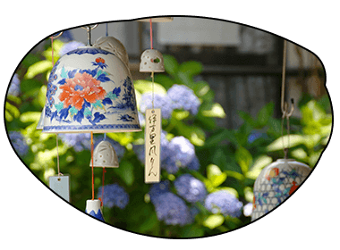
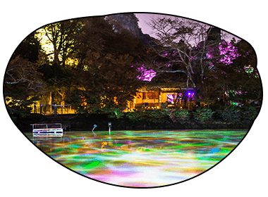
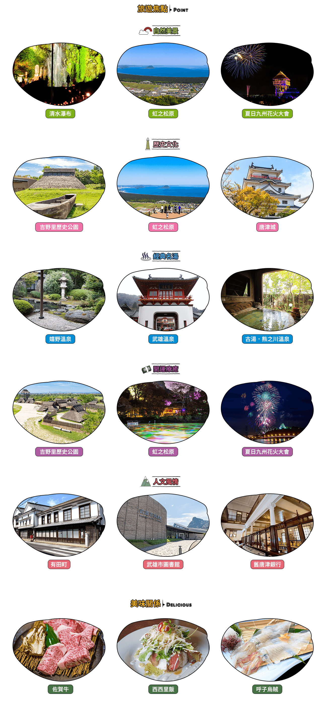

 每年夏天在伊萬里密窯之鄉－大川內山舉行的風鈴祭，是佐賀最富詩意的祭典。各窯戶掛上自家描繪燒製的風鈴，裝飾山中古城，清透的風鈴聲彷彿驅走盛夏的燥熱，是夏季最能清心沉澱的選擇  每年7月中旬至10月下旬舉行的武雄光之展，點亮夜晚的御船山樂園，運用燈光、投影技術，結合園內的自然景觀，交織出不同光影變化所產生的藝術品，彷彿進入一場驚奇的仲夏夜之夢 每年7月在唐津舉行的九州花火大會，是佐賀規模最大的花火盛會，施放地點位於西濱海水浴場，傍晚可以先觀賞夕陽美景，夜晚6,000發煙火齊放，與唐津海灣、唐津城相互輝映，十足華麗 